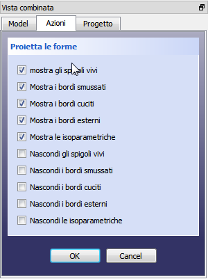

Proietta le forme Proietta le forme
|
| Posizione nel menu
|
| Drawing → Proietta le forme
|
| Ambiente
|
| Drawing, Completo
|
| Avvio veloce
|
|
|
| Vedere anche
|
|
|
|
Descrizione
Questo strumento crea una proiezione dell'oggetto selezionato, l'oggetto sorgente, nella vista 3D.

Utilizzo
| 
|
- Selezionare un oggetto nella vista 3D o nella struttura del progetto
- fare clic sullo strumento Proietta le forme
- impostare le opzioni desiderate
- cliccare su OK
Nell'albero del progetto viene aggiunto un oggetto Nome_proj. Per le proiezioni successive, viene aggiunto un numero a tre cifre.
|
Modificare una proiezione esistente
|
|
I parametri della proiezione possono essere modificati nella scheda Dati della vista combinata.
Base
- DatiLabel :
- DatiPlacement :
Projection
- DatiDirection : definisce la direzione della proiezione. Questa viene determinata dai valori xyz che definiscono un vettore normale alla pagina. La vista dall'alto sul piano xy è (0,0,1). I valori possono anche essere negativi.
- DatiHCompound :
- DatiIso Line HCompound :
- DatiIso Line VCompound :
- DatiOut Line HCompound :
- DatiOut Line VCompound :
- DatiRg1 Line HCompound :
- DatiRg1 Line VCompound :
- DatiRg NLine HCompound :
- DatiRg NLine VCompound :
- DatiSource : indica la forma sorgente utilizzata
- DatiVCompound :
|

{kind=link}
{kind=link}